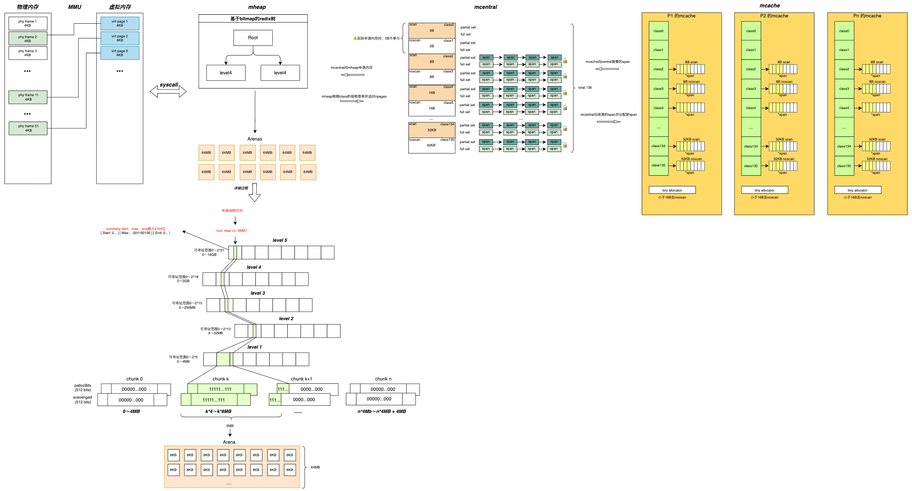

📄 本文共 1421 字，预计阅读 4 分钟
04. 内存管理--mheap
0. 写在前面的话
go的内存管理是这一系列文章中花费时间最长的，第一，我对内存管理的内容一直了解的比较少，第二，这部分内容却是比较多，尤其是mheap管理内存的radix树结构，我用了很长时间去理解。废话不多说，先上一副按照我梳理的思路画的图。
 图1: go内存管理整体架构
{kind=link}
我们沿着这张图从左到右依次进行展开介绍。
1. 核心定位与整体架构
在 Go 的三级内存管理架构（TCMalloc 变种）中，mheap 处于最顶层，它掌管着整个 Go 程序从操作系统申请下来的所有虚拟地址空间，并负责将其切割成页（Page）分发给下层组件。
从宏观视角来看，mheap 的核心职责包括：
- 向 OS 申请内存：通过系统调用（如
mmap）管理虚拟地址空间的增长。 - 大对象直接分配：大于 32KB 的对象跳过
mcache和mcentral，直接由mheap分配 。 - 内存管理与索引：通过 Radix Tree（基数树）管理空闲页，通过
arenas建立虚拟地址到元数据的映射 。 - 垃圾回收支持：管理
sweepgen等 GC 关键元数据 。
2. 数据结构解析
mheap 的结构体设计体现了 Go 对锁粒度、缓存局部性和并发性能的极致追求。以下是核心字段及作用解读：
type mheap struct {
// 1. 全局大锁：当 mcentral 缺内存或进行大对象分配时使用，保护 mheap 内部数据安全。
lock mutex
// 2. 页面分配器：基于位图的基数树，用于极速定位空闲连续页。
pages pageAlloc
// 3. Span 管理：记录所有创建的 mspan，供 GC 遍历使用。
allspans []*mspan
// 4. 堆元数据索引：稀疏数组，实现 "虚拟地址 -> 元数据(heapArena)" 的 O(1) 查找。
arenas [1 << arenaL1Bits]*[1 << arenaL2Bits]*heapArena
// 5. 中央缓存：内嵌的 mcentral 数组，作为 mcache 的上游“批发市场”。
central [numSpanClasses]struct {
mcentral mcentral
pad [cpu.CacheLinePadSize - unsafe.Sizeof(mcentral{})%cpu.CacheLinePadSize]byte
}
// 6. GC 扫描世代：用于并发清理的标记。
sweepgen uint32
}
关键组件详解
-
Arenas (稀疏索引)： Go 向 OS 申请内存的最小单位是 Arena（通常为 64MB）。为了解决虚拟地址空间不连续的问题，
mheap使用二级稀疏数组arenas来管理。给定任意一个内存地址，Go 可以通过位运算快速定位到其对应的heapArena元数据，从而获取该页面的状态（如 GC 标记位）。 -
Central (内嵌数组)： 需要特别注意的是，
central并非指针，而是直接内嵌在mheap中的数组。为了避免伪共享（False Sharing）导致的缓存失效，每个mcentral结构体都进行了 CPU Cache Line 对齐填充（Padding）。
3. pageAlloc：基于 Bitmap 的 Radix Tree
mheap对“堆页”的管理核心在 pageAlloc。它采用“底层位图 + 上层摘要（summary）”的 Radix Tree 结构来支持快速查找连续空闲页。
3.1 树状结构设计
需要先明确：这里的“Page=8KB”通常指 运行时堆页 的管理粒度，而不是 OS 的硬件页大小（很多系统为 4KB），更不是对象分配的最小单位（对象可以远小于 8KB）。
在 Radix Tree 的叶子层，常见组织方式是以 Chunk 为单位维护位图：
-
位图（bitmap）：1 bit 对应 1 个 heap page
-
0：空闲 -
1：占用
-
-
Chunk 覆盖一段连续地址范围，叶子位图直接反映该范围内页的使用情况。
3.2 Summary 机制
为了在不遍历子节点的情况下快速判断是否有足够的连续空间，每个节点维护了三个核心值：
- Start：从左侧边界开始，连续空闲页的数量。
- End：从右侧边界结束，连续空闲页的数量。
- Max：该节点范围内，任意位置能找到的最大连续空闲页数量 。
有了这三个值，查找长度为 N 的连续空闲页时，可以在上层迅速判断“这一子树是否可能满足”，从而大幅减少访问叶子位图的次数。
位压缩优化： Go 团队强制将 start、end、max 各分配 21 bit。总共 63 bit，可以塞入一个 uint64 整数中。
设计哲学：这意味着 CPU 可以通过一条原子指令（如
LoadUint64）读取或更新整个节点的状态，极大提升了并发性能并简化了锁机制 。
3.3 分配与更新流程
-
自顶向下的搜索 (Alloc)：
-
快速路径：通过
searchAddr避免重复扫描低地址的碎片 。 -
根节点剪枝：若
root.max < N，尝试扩展堆地址空间，扩展失败，返回 OOM，无需遍历 。 -
跨边界检查：利用 Summary 的
end和start属性，能够发现跨越子节点边界的连续空闲块（即child[i].end + child[i+1].start >= N）。
-
-
自底向上的更新 (Update)： 当位图变更时，状态必须向上冒泡更新。父节点的
max是由所有子节点的max以及跨边界连续块的最大值决定的 。
4. mheap 与 mcentral 的协同机制
小对象的分配路径通常是：
mcache（per-P） → mcentral（共享、按 sizeclass 管理） → mheap（按页供给，构造 span）
当 P 持有的 mcache耗尽时，会从对应的 mcentral获取 mspan；如果 mcentral无法提供可用 span，则会触发向 mheap申请更多页并“增长”（grow）。
4.1 触发条件
当 mcentral.cacheSpan() 尝试从可用链表获取 span 失败（例如 partial 不足），可能会：
-
触发对相关 span 的 sweep（回收已可复用对象），以补充可用 span；
-
若仍不足，调用
mcentral.grow()，向mheap申请新的连续页并构造新的 span。
4.2 交互流程详解
- 计算页数需求：
mcentral并不直接管理字节，它管理的是 Span。根据申请的spanClass，Go 运行时查表得知该规格的 Span 需要多少个连续页（npages）。- 例如：申请一个
class为 10 的 Span，可能对应需要 2 个连续的 8KB 页 。
- 例如：申请一个
- 加锁与分配： 由于
mheap是全局唯一的，申请过程需要获取mheap.lock。随后，mheap利用 Radix Tree 算法，快速找到一段长度为npages的连续空闲页 。 -
Page 到 Span 的转换 (关键步骤)：
-
初始化
mspan元数据（地址范围、spanClass、对象大小/计数、状态等） -
更新对应地址范围内的
heapArena.spans索引，使地址可被快速定位到所属 span（这对 GC 与运行时查找非常关键） - 切分与分发： 将新 span 纳入
mcentral管理，并将对象切分供mcache快速分配。
-
4.3 大对象特例
对于大于 32KB 的对象，微型分配器（Tiny）和小对象分配器（Small）无能为力。此时请求会直接打到 mheap，mheap 会计算需要的页数，直接从 Radix Tree 中分配，并定制一个特殊的 Span（Class 0）返回给调用方，不经过 mcentral 。
5. 内存归还：Scavenger 机制
仅有“标记空闲”并不等价于“RSS 下降”。在高峰流量之后，应用可能出现“堆内空闲很多，但物理驻留（RSS）仍然很高”的情况。为此 Go 引入 scavenging（内存归还）机制，用于将一部分空闲页通过 sysUnused 等接口归还给 OS，降低 RSS。
- 工作原理： Scavenger 是运行时后台回收任务（实现上可能由后台 goroutine/线程承担）；
- 它会倾向于选择“存在较大连续空闲页区间”的区域进行归还（依赖
pageAlloc的摘要信息来加速定位）； - 在 Linux 上，运行时可能使用
madvise的不同策略（如MADV_DONTNEED或MADV_FREE），具体默认策略与版本相关。
6. 总结
mheap是 Go 运行时堆管理的基础设施层，其设计要点在于：
- arena 索引：将“地址 → 元数据/span”的定位成本压到极低，为分配、GC、sweep 等流程提供支撑。
- pageAlloc（Radix Tree + Bitmap + Summary）：以页为单位维护空闲/占用，并通过
start/end/max摘要支持快速的连续区间查找。 - 与 mcentral 的供给协作：小对象通过 sizeclass 链路向上“要 span”，当上游不足时由
mheap按页扩容并构造新的 span。 - 大对象直达 mheap：减少中间层开销，按页直接分配
sizeclass=0span。 - scavenger 归还物理内存：在不破坏堆内结构的前提下，尽可能降低 RSS，实现更好的内存弹性。